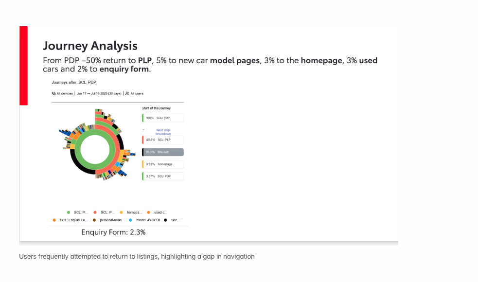

Improving conversion with rapid experimentation
Toyota is one of the world’s largest automotive brands, with a high-traffic digital platform supporting customers across research, configuration, and purchase journeys.
As a Senior Product Designer within a cross-functional growth team, I defined and delivered A/B experiments across Toyota’s web and mobile experiences to improve conversion, leaning on behavioural data to spot opportunities and prove impact.

Measured uplift along the journey.
Goal
I was brought into the team to identify opportunities to improve conversion across Toyota’s digital journeys, from initial exploration through to enquiry and purchase.
Working across the full lifecycle, I focused on uncovering high-impact opportunities using behavioural data and translated them into design-led experiments on live journeys.
Approach
We ran controlled A/B tests on live product journeys, comparing existing designs (control) against new variants to measure impact.
Working closely with a Senior Optimisation Consultant, Lead Engineer, and QA Tester, I helped shape hypotheses, define success metrics, and design experiments grounded in behavioural data from Adobe Analytics and ContentSquare.
This allowed us to identify high-impact opportunities, prioritise what to test, and iterate quickly while balancing risk on a live production site.
Improving navigation between product pages and listings
Behavioural data showed users were actively exploring vehicles, but the journey between listings (PLP) and product pages (PDP) wasn’t supporting this well.
Around 50% of users attempted to return to listings, yet navigation was unclear and underperforming, limiting exploration and progression toward enquiry.

Placeholder, swap for experiment UI
From PDP, ~50% returned to PLP, 5% to new car model pages, 3% to the homepage, 3% used cars and 2% to the enquiry form.
Users frequently attempted to return to listings, highlighting a gap in navigation.
- 49.8% → SCL: PLP · 25.5% site exit · 3.58% homepage · 3.57% SCL: PDP (refresh / repeat)
- Enquiry form: 2.3%

Next-step breakdown from PDP · Enquiry 2.3%
Exploring different navigation patterns
The opportunity wasn’t to introduce new behaviour, but to better support what users were already trying to do: returning to listings.
I explored multiple navigation patterns, including breadcrumb variations (“Back to inventory”, “Return to stock list”) and CTA-based solutions, to understand how best to reduce friction and improve flow.
Behavioural patterns showed users were already relying on familiar navigation cues. Rather than introducing something new, we focused on making this interaction clearer and more visible.
Improving visibility and clarity of returning to listings would increase exploration and progression toward enquiry.
Exploring different navigation patterns to support return to listings
Working with system limitations
Constrained by the existing design system, we couldn’t introduce new interaction patterns. Although analysis surfaced wider issues, we chose to focus on a small, testable change to isolate impact and move quickly.
Clear uplift from experimentation.
- +31% increase in PLP page views
- +20% increase in enquiry progression (low sample, directional)
- Increased engagement with navigation across devices
Clarity beats complexity
Clarity in familiar patterns can outperform introducing something new. Improving familiar interactions can have a significant impact on user flow, particularly in high-intent journeys where users are trying to move quickly.
Supporting business users through clearer, contextual pricing and messaging
As we looked across the configuration journey, it became clear the experience was primarily geared toward personal buyers. Business users were moving through the same flow, but without clear support, particularly around pricing context (incl./excl. VAT), which made it harder to understand relevance.
Introducing lightweight personalisation
Rather than redesigning the journey, the opportunity was to introduce a clearer distinction between personal and business contexts within the existing experience.
Using competitor analysis as a starting point, I explored how other journeys introduced personalisation and where it could sit most effectively. This led to testing multiple entry points, within the sales grid, below navigation, and within the hero, as well as evolving the design from simple icon + text to more engaging, image-led messaging.
Making business pricing and context more visible would increase engagement and relevance for business users.
Make personalisation visible and reusable
Through exploration, it became clear that placement was critical. Options embedded within the grid were less noticeable, and those layered on imagery reduced clarity.
We introduced a high-visibility Personal / Business toggle above the main content, making it easy to find, clearly legible, and reusable as a pattern for future personalisation.
On mobile, this was adapted into a dedicated section to maintain visibility and usability.
Final toggle, desktop and mobile (single pattern, adapted across breakpoints)
Worked within platform and testing limits
The work was constrained to content-level changes within the existing configuration journey, with no changes to core layout or components.
Certain elements were controlled by Toyota Europe, requiring longer approval cycles, and models already in active tests were excluded, narrowing the scope of what could be explored.
Working closely with optimisation, we structured the test as control vs variant and lined up definitions for success ahead of launch.
Because the territory was exploratory, measurement prioritised resonance over conversion claims to start, whether users noticed the toggle, used it deliberately, and saw business-priced content as meaningful before we scaled the pattern.
- Toggle exposure rate and interactions (clicks, repeat visits to the toggle, drop-off beside it)
- Transitions into business context after toggling, including views of VAT-aware pricing lines and onward configuration steps tied to fleet intent
- CTR and scroll depth on business-specific explanatory / pricing surfaces introduced with the variant
- Signals of engagement downstream (time in configuration post-toggle, enquiry starts with business journey metadata where available)
Together these gave optimisation and QA enough to judge whether to extend the pattern versus iterate, without over-indexing early on a single north-star KPI.
Strong early engagement signals
Initial testing showed strong interaction with the toggle, validating user interest in switching between personal and business contexts.
The experiment launched shortly before I left the project, but early signals supported further investment in personalisation.
Engagement snapshot · swap for dashboards or variant screen
Make personalisation obvious and user-controlled
Even lightweight personalisation can be effective when it’s visible, easy to use, and clearly improves relevance, without requiring complex system changes.